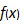

2.2. The Main Menu¶
2.2.1. Menu File¶
After having started the program, it is ready for dealing with a new measurement evaluation which is called project. The TABs “Procedure” and “Equations” are enabled.
A measurement problem which is already existing as a project file (extension .txp) can be loaded into the program under the menu item “File – Load Project“ or with the icon which is automatically followed by the complete sequence of calculations which is finished when the TAB “Results” is enabled and made active. This may take some seconds which is pointed out also by an additional dialog, which vanishes when all calculations are done. Now, the user may work on that project.
If problems occur during the automatic sequence of calculations through the TABs while the project is loading, this sequence can be omitted with the menu item “Options – Project Load – without calculations“.
Under the menu item “File - Save Project“ or with the icon
 a measurement evaluation being in progress can be
saved as project file (extension .txp) under the same file name or it
may be saved under a different project file name with the menu item
“File - Save Project As“ or with
a measurement evaluation being in progress can be
saved as project file (extension .txp) under the same file name or it
may be saved under a different project file name with the menu item
“File - Save Project As“ or with  . With
“File - Close Project“ or with
. With
“File - Close Project“ or with  the project file can be
closed. A csv file format can also be selected for loading or saving a
project file.
the project file can be
closed. A csv file format can also be selected for loading or saving a
project file.
2.2.2. Menu Edit¶
A report file “Report.txt” describing the present status of the project can be produced under the menu item “Edit - Report“. The contents of this file may be displayed with the internal text editor via the TAB “Text Editor” or saved with another filename. The results of all output quantities are written to the report file, starting from the uncertainty budgets for the second or third output quantity.
If more than one output quantities are involved, then, under the menu item “Edit - Select output quantity”, one of these can be selected and to which then the calculations of its uncertainty, the uncertainty budget, Detection threshold and Detection limit refer to.
Hint
If another output quantity is selected by the user, this implies that the selections of the gross and net counting rate symbols must be changed accordingly, unless the evaluation method is linear unfolding. The program then switches to the TAB “Equations” and gives an appropriate hint in the rightmost field of the status bar. If it is, however, a method of linear unfolding, where net and gross counting rates need not to be selected manually, all steps of calculations up to the TAB “Results” are performed automatically in one step.
The menu item “Edit – Decay curve“ allows editing some
sub-dialogs and the primary fitting results if the procedure of linear
unfolding was invoked by a call to LINFIT(..) within the equations:
Sub-menu “model of decay curve“, or, equivalently the icon
 in the toolbar:
in the toolbar:allows editing parameters of the evaluation model;
Sub-menu “data input“, or, equivalently the icon in the toolbar:
invokes the sub-dialog for editing the input data of the decay curve;
Sub-menu “Curve-fit table“, or, equivalently the icon
 in the toolbar:
in the toolbar:opens an editor window for viewing the primary fitting results.
If parameters or data have been modified while working within these sub-dialogs the evaluation is re-started and terminated at the TAB “Results“.
The menu item “Edit – Gamma spect“ allows editing of single
dialogs or result, if the linear unfolding was activated by a call to
Gamspk1(..) within the equations.
Sub-menu “Edit gamma lines“, or, equivalently, the icon within the toolbar:
This calls the dialog for editing the individual gamma line data;
Sub-menu “Average line activities“, or, equivalently, the icon
within the toolbar:This opens the Editor window for inspection of the results obtained for the weighted mean.
If changes have occurred within these sub-menus, the evaluation is repeated through to the TAB “Results”.
The menu item “Edit – Calibration curve” invokes a dialog, which allows the data input of a calibration curve, to fit a polynomial to it and to take for a specific calibration point value and uncertainty from the latter, which in turn are used in UR then.
The new menu item “Edit – Change symbol name“ allows to change the name of a specific symbol throughout the dialogs and program internal fields or arrays. The specification and unit associated with this symbol are maintained. If a symbol name needs to be changed, this should be done with this menu item instead of changing this name directly in the equations.
The new menu item “Edit – Serial evaluation“ has been introduced allowing the manifold evaluation of a project with partially modified input quantity values/uncertainties. The description of this new option is given in Section 3.6.
The four parameters of the case of a binomial+Poisson distributed count number can be edited or re-edited using the dialog which is loaded under the menu item “Edit – Set binomial/poisson case“.
Under the menu item “Edit – test physical units“ the consistency of the physical units of the quantities can be checked by an numerical algorithm. This test is described in detail in Section 5.21.
If a project makes use of calculating the time dependent behaviour of a radioactive decay chain with two or more member, the menu item “Edit – Edit decay chain“ allows to select a decay chain from a file with few pre-defined decay chains and to edit some other measurement-related conditions. A detailed description is given in Section 4.14.
It may happen that, due to an error having occurred, the project can no longer be opened, it requires to be set up again. Instead of a completely new input of all the values and uncertainties of input quantities, it would then be helpful to take such values from the defect file variant of the project, if these still exist. This step is supported by using the menu item “Edit – Load missing values from project variant“. This requires only the input of the filename of the project variant. Values and uncertainties still existing in the project variant are transferred into the actually opened project for symbols with equal names.
2.2.4. Further important icons¶
From the remaining icons in the toolbar the more important ones are:
the “update icon”
 , by which the calculations
from the TAB “Values, Uncertainties” through the TAB “Results” can be
performed in a single step, after changes in e.g. input data were
observed;
, by which the calculations
from the TAB “Values, Uncertainties” through the TAB “Results” can be
performed in a single step, after changes in e.g. input data were
observed;the “delete rows icon”
 allows to remove such rows
which have been selected in advance by the mouse within grids, such
as “Table of Symbols” and others, also in other dialogs;
allows to remove such rows
which have been selected in advance by the mouse within grids, such
as “Table of Symbols” and others, also in other dialogs;
a block of rows may also be selected for this purpose:
select the upper row by mouse click, hold the shift key pressed down and click into the lower row;
the UR Help can be invoked with the icon
 ;
;a page of the Help for advices in case of problems can be invoked with the icon
 ;
;the “fontname icon“
 allows
choosing fontname and fontsize;
allows
choosing fontname and fontsize;the “mean-handling icon“ allows ruleinput of values of a variable and the selection of such variable and of the type of mean.
The icon
 invokes a dialog showing the actual parameters
of a special distribution density connected to an input quantity.
This requires that the row of this input quantity within the table
“values, uncertainties” is highlighted.
invokes a dialog showing the actual parameters
of a special distribution density connected to an input quantity.
This requires that the row of this input quantity within the table
“values, uncertainties” is highlighted.Short informations about special UR functions can be displayed by the icon .
Tip
User guidance is given in the status bar at the bottom of the UncertRadio window, in the right-most field. If a project has been changed in some details this is indicated in the status bar to the left of the latter (“unsaved”).
For working with tables, refer to the section on managing rows and column blocks within tables.
A certain number of projects files have been added to the program showing different examples of measurement evaluation. For an introduction it is recommended to load such an example project and go through it: see Section 2.3.